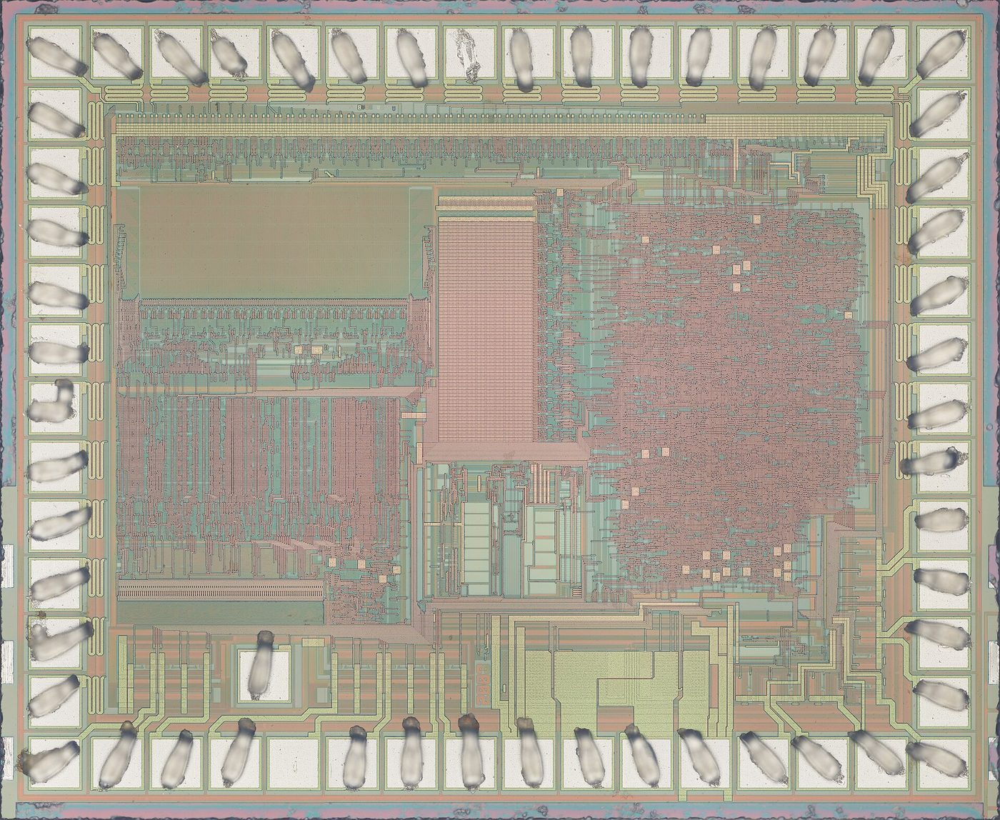

托弗智能科技
网站开发与部署运营 · 2026.6 - 2026.9
散状物料输送设备企业的官网。围绕产品线、制造能力、资质认证与现场视频重新整理素材，把原来零散的资料整合成一条能读下去的浏览路径。
AI 编程工具辅助页面开发 · GitHub 工作流交付 · 站点部署与运营
打开 topflow.cn
下面两个站点都真实在跑，有真实用户。我负责的部分写在每一项下面。
网站开发与部署运营 · 2026.6 - 2026.9
散状物料输送设备企业的官网。围绕产品线、制造能力、资质认证与现场视频重新整理素材，把原来零散的资料整合成一条能读下去的浏览路径。
AI 编程工具辅助页面开发 · GitHub 工作流交付 · 站点部署与运营
打开 topflow.cn
核心运营 · 2026.9 - 2026.11
一个 API 中转服务：把 Codex、Claude、Gemini、DeepSeek 等模型的调用收敛到一个入口。我负责部署、日常可用性维护与用户侧支持，服务面向真实用户，已有实际付费使用。
左边这页文档是我写的：从身份凭证、令牌生成到 cURL 与 PowerShell 示例，把「怎么接进来」讲到用户不用再问人。
服务部署与可用性维护 · 配置排查与问题定位 · 使用文档与公告撰写
打开 hejuapi.com

我是张晨曦，郑州轻工业大学智能物联专业在读。写 Java 和 Python，做后端与 AI 应用，也能把前端和部署一起接住。
两段网站开发与运营经历让我明白，一个东西能不能用，比它写得多漂亮更重要。现在主要在做 AI 应用的落地：把大模型接进真实业务，处理异步任务、回调、异常和边界。

下面的数据由构建脚本从 GitHub 抓取。项目本身比贡献数字更值得看。
加载中…